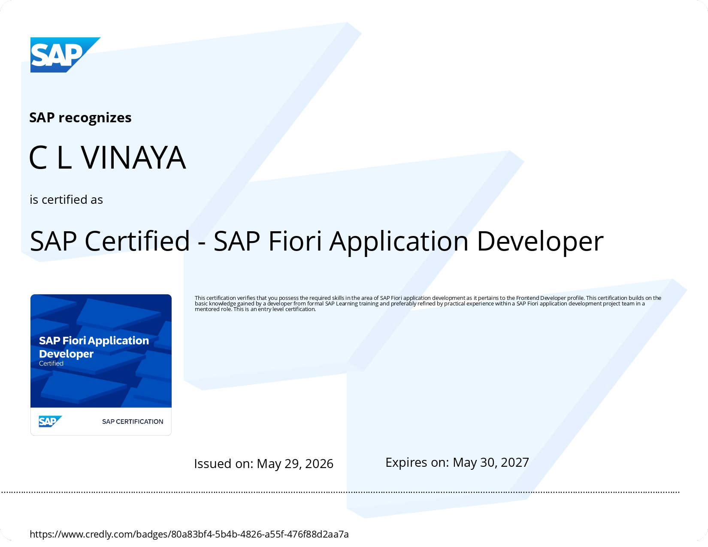
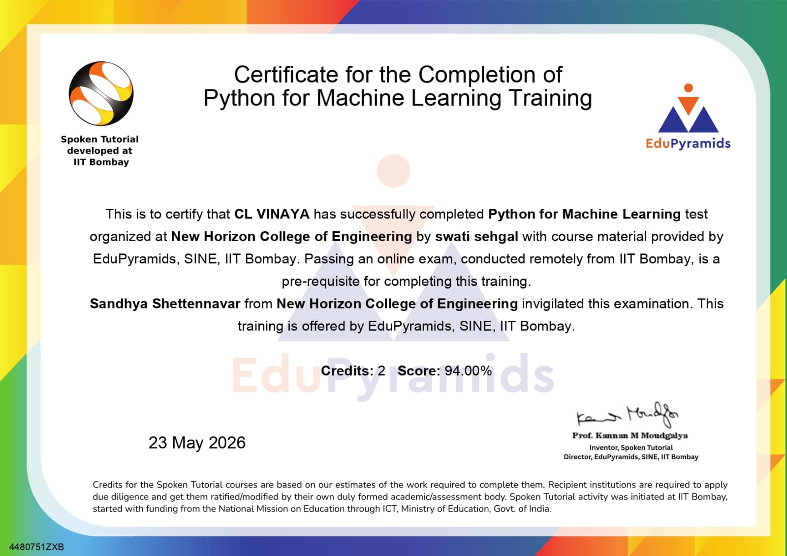
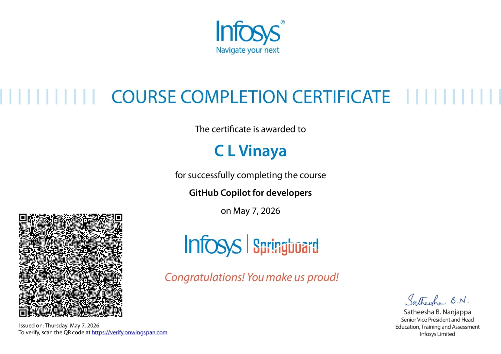
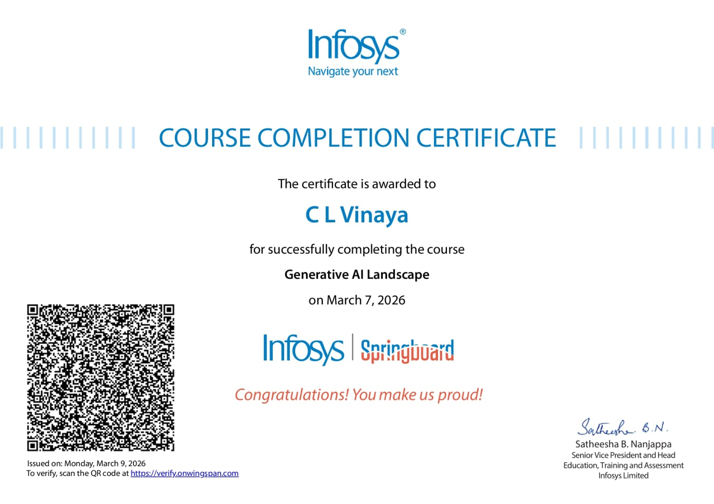
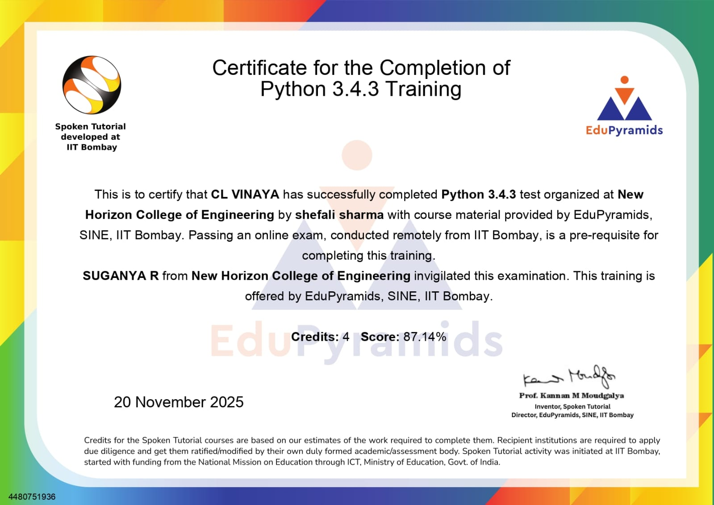
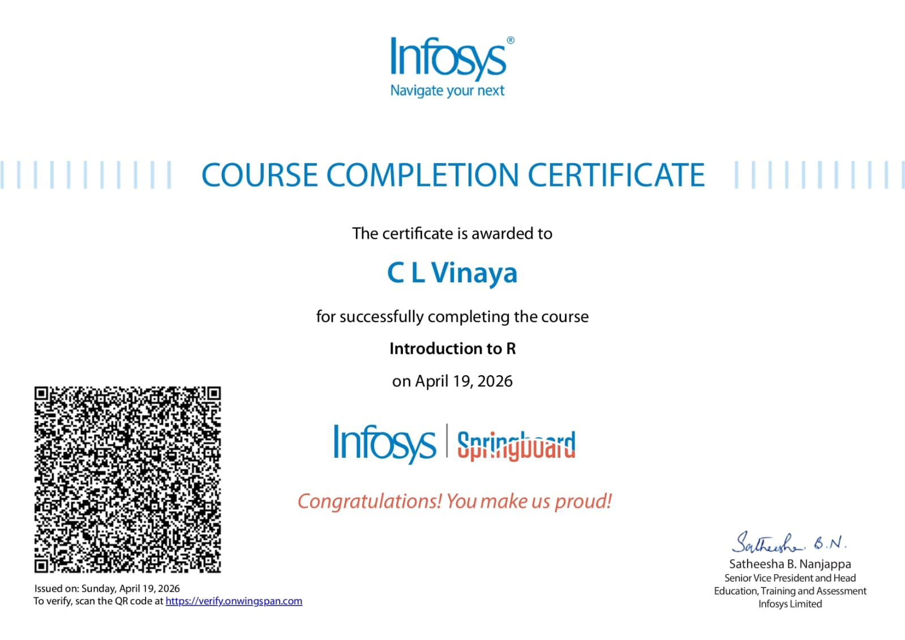

Professional Learning Journey,
Industry Credentials & Technical Excellence

Certification Overview
These certifications represent my continuous commitment
to learning emerging technologies, software development,
artificial intelligence, machine learning, enterprise systems
and modern developer tools.
Each certification reflects practical knowledge gained through
industry-focused learning programs, hands-on exercises and
technical assessments.
Featured Professional Certification
SAP Certified – SAP Fiori Application Developer demonstrates
expertise in enterprise application development, SAP UI
technologies, frontend architecture and modern business
application solutions.
AI & Machine Learning Certifications



Programming & Data Science Certifications


Skills Gained
🤖 Artificial Intelligence
📈 Machine Learning
🐍 Python Programming
📊 Data Science
⚡ Generative AI
💻 Enterprise Development
📚 Statistical Computing
🚀 AI Assisted Development
Learning Journey
Achieved SAP Professional Certification in Fiori Development
Built strong foundations in Python programming
Completed Machine Learning focused training programs
Explored Generative AI technologies and trends
Learned statistical analysis using R programming
Adopted modern AI-assisted software development workflows